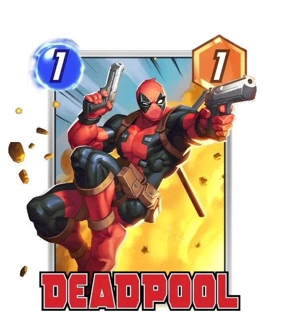

Marvel / Second Dinner. Imagem de Deadpool fornecida pelo usuário.REFERÊNCIA 01
Marvel Snap
O QUE FUNCIONA
A silhueta ultrapassa a janela; atributos têm contornos próprios; o nome se comporta como lettering de personagem. Na imagem enviada, arma, cabeça e perna atravessam limites distintos, criando planos de profundidade. A Unity descreve ferramentas de frame break, altura e paralaxe; isso não implica que um brilho de CSS produza o mesmo efeito.
TRADUÇÃO PARA DUCKS N ROBOTS
Usar a moldura como plano atrás da arte, manter números em massas sólidas e dar escala real ao personagem. Inspira A. Não copiar os recipientes azul/laranja ou o lettering de Deadpool.
A imagem enviada é referência visual; a URL da Marvel bloqueou a abertura direta, mas o artigo foi recuperado pela busca. O case Unity foi lido.